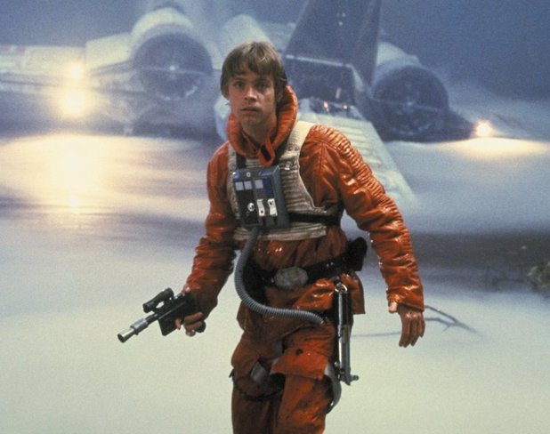

The Original Trilogy is consists of episodes IV, V, and VI.
The original trilogy ( Directed by George Lucas and released in 1977) was supposed to be the beginning of the saga until the release of Phantom Menace in 1998. The original trilogy follows the story of a young pilot name Luke Skywalker (played by Mark Hamil) who contacts on old family friend named Obi-Wan Kenobi who introduces him to the ways of the force.
